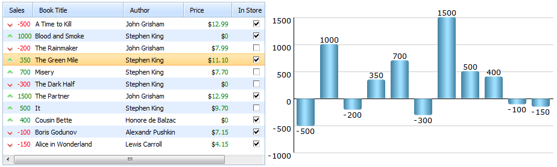

Table of Contents
Grid Integration
Pretty often, you may need to integrate grid with chart, i.e. show grid's data and their changes on chart.
And this article we'll devote to grid-chart integration.

Full code of the example in the picture
In short, the integration is implemented through the only code line:
myChart.parse(mygrid,"dhtmlxgrid");
In detail, to perform the integration you should make the following steps:
- Create dhtmlxChart object;
- Create dhtmlxGrid object;
- Load data to the grid;
- Load data from the grid to the chart;
- Additionally, implement chart refreshing when data in the grid is changed;
- And put everything into window.onload function to ensure that our code will be performed as soon as the page finishes loading.
Step 1. Create dhtmlxChart object
var myChart = new dhtmlXChart({ view:"bar",//sets chart's type. In our case it's vertical bar color:"#66ccff", //sets color of bars container:"chart_container",// an html container that will contain our chart value:"#data0#", // sets data that chart will present. #data0# refers to the first column of the grid label:"#data0#", // specifies chart labels width:30, // sets the width of bars origin:0, //represents positive and negative values yAxis:{ //sets vertical axis start:-1000, step: 500, end:2000 }, xAxis:{ template:function(){ return "" } //horizontal axis without labels } });
Step 2. Create dhtmlxGrid object
var mygrid = new dhtmlXGridObject('gridbox');// creates dhtmlxGrid instance mygrid.setSkin("dhx_skyblue")// sets skin of our grid
Step 3. Load data to the grid.
mygrid.loadXML("xml/gridData.xml");// loads data to the grid from the external file gridData.xml
Step 4. Load data from the grid to the chart
myChart.parse(mygrid,"dhtmlxgrid")// loads grid's data to the chart
Step 5. Implement chart refreshing when data in the grid is changed
function refresh_chart(){ // the function is called every time data in the grid is changed myChart.clearAll();// clears chart dataset myChart.parse(mygrid,"dhtmlxgrid"); //loads new grid data to the chart }; mygrid.attachEvent("onEditCell",function(stage){// fires after the editor is closed if (stage == 2)// specifies stage of editing. 2 means that event will be fires after the editor is closed refresh_chart();// calls the function defined before return true; });
Step 6.Put everything into window.onload() function
window.onload = function(){ //the function ensures that our code will be performed as soon as the page finishes loading ...//the code stated above }